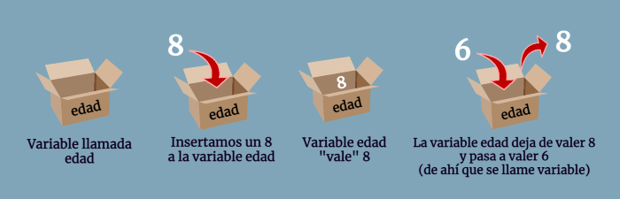

Día 2: Las Piezas del LEGO - Variables y Tipos de Datos
Si los programas fueran recetas, las variables serían los recipientes donde guardas los ingredientes. Hoy aprenderemos a crear y usar estos "recipientes" para manejar información.
¿Qué es una Variable?
Una variable es un espacio en la memoria del computador donde puedes almacenar un dato. Para crearla en Java, necesitas tres cosas: un tipo, un nombre y un valor.
Tipos de Datos Primitivos
Estos son los tipos de datos más básicos y esenciales:
-
int: Para números enteros. Ejemplo:int edad = 25; -
double: Para números con decimales. Ejemplo:double precio = 19.99; -
boolean: Para valores de verdadero o falso. Ejemplo:boolean esEstudiante = true; -
char: Para un solo carácter. Ejemplo:char inicial = 'J';
El Tipo de Dato Más Común: String
Aunque no es primitivo, el String es
fundamental. Se usa para almacenar texto.
String nombreCompleto = "Juan Pérez";
System.out.println("Mi nombre es: " + nombreCompleto);Mini-Proyecto del Día
Crea un programa que calcule el área de un rectángulo.
Deberás crear dos variables de tipo
double (base y
altura), asignarles valores, y luego crear
una tercera variable area para guardar el
resultado de la multiplicación. Finalmente, imprime el
resultado en la consola.